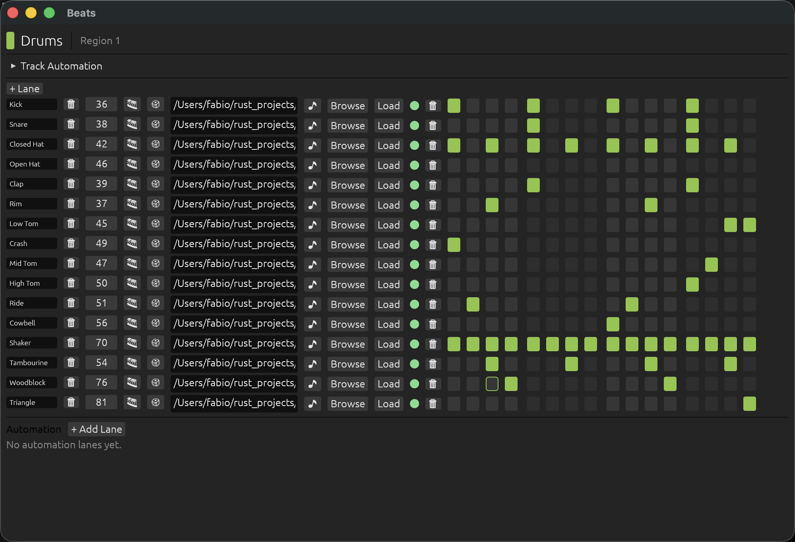
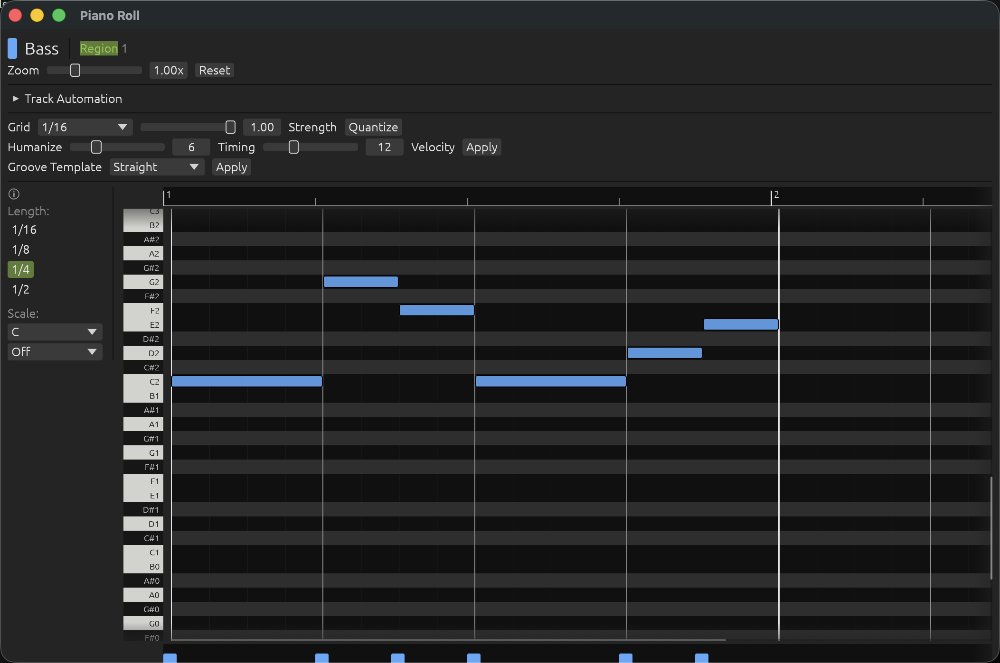

2. Tracks & Playlist
How tracks are created, arranged in time, and edited.
The Channel Rack
The Channel Rack (dockable left panel, or its own detached window) is where tracks are created and managed. Use + Add to create one of three track kinds:
Piano Roll Track
Free-form melodic editing — its Regions hold Notes.
Step Grid Track
Drum-machine style lanes and steps — its Regions hold a step grid.
Audio Track
Holds recorded or imported WAV clips instead of Regions. Newly added, it's immediately armed for recording.
Each row in the rack shows the track name, and:
- M — mute the track.
- S — solo the track.
- FX — open the track's effect chain menu (see Mixing & Effects).
- ✕ — delete the track.
- For Audio tracks, an Input device picker appears while the track is armed.
Clicking a Piano Roll or Step Grid track's row selects it as the target for its respective editor window; the row is highlighted while selected.
The Playlist
The Playlist is the song-wide arrangement timeline. Each track owns its own independent Regions positioned along its row — placing similar material twice always means two independent copies, never a shared reference (unlike FL Studio–style patterns).
- Click empty space on a track's row — create a new Region there.
- Drag a Region's right edge — resize it: shorter truncates its content, longer loops it.
- Drag a Region's body — move it in time.
- Double-click a Region — open it in the Piano Roll or Beats window for editing.
- Right-click a Region — remove it.
- Drag the small handle at a Region's top-left or top-right corner — set a fade-in or fade-out, shown as a shaded triangle over the faded portion. A fade ramps that Region's own output linearly to/from silence over the dragged span; it doesn't affect anything before/after the Region's own on-timeline extent.
Audio clips (on an Audio track's own row) have the equivalent trim/fade handles, plus Take Folder comping and Flex Time/Pitch editing — see Editing Audio.
Audio tracks get their own row for their recorded/imported clips instead of Regions — the two kinds never share a row. The Zoom slider at the top of the Playlist scales the whole timeline.
The Beats window (step grid)
Double-clicking a Step Grid track's Region opens it in the always-detached Beats window.
- + Lane — add a new lane to the grid.
- Each lane has a name, a MIDI pitch (used when the lane is driven by a synth rather than a sample), a 🎹 button to give the lane its own synth engine/patch that overrides the track's, sample-load controls, and its row of step buttons.
- Click a step to toggle it on/off. Active steps default to velocity 100.
- If a lane has a loaded sample, that sample always takes priority over any synth (the lane's own, or the track's) when that lane plays.

The Piano Roll
Double-clicking a Piano Roll track's Region opens it in the Piano Roll window: pitch on the vertical axis, time on the horizontal axis, drawn on a free-form canvas.
| Gesture | Effect |
|---|---|
| Click empty space | Drop a note at the default length (set via the "Length" buttons). |
| Click-drag from empty space | Draw a new note out to any length. |
| Drag a note's body | Move it (pitch and time). |
| Drag a note's right edge | Resize it (hover near the edge for the resize cursor). |
| Click a note | Select only that note. |
| Ctrl/Cmd-click a note | Toggle it into/out of the current selection. |
| Shift-drag from empty space | Rubber-band select every note it touches. |
| Drag within a multi-note selection | Move the whole selection together. |
| Right-click a note | Delete it (or the whole selection, if it's part of one). |
| Delete / Backspace | Delete the current selection. |
A note's velocity is set from the velocity lane below the grid — drag a note's bar up or down. The roll grows automatically as notes reach its right edge. The Zoom and Roll height controls in the top toolbar resize every track's piano roll at once.

Quantize, humanize and groove
Both the Piano Roll and the Beats window's per-lane menu offer quantize/humanize/groove- template tools for tightening or loosening timing — see Groove & Tempo.
Automation
Both the Piano Roll and Beats windows show an Automation panel below the grid for whichever Region is open — volume/pan/send-level/effect-param "rides" scoped to that one Region — plus a separate "Track Automation" panel for lanes that apply across the whole arrangement. See Mixing & Effects for how lanes work.